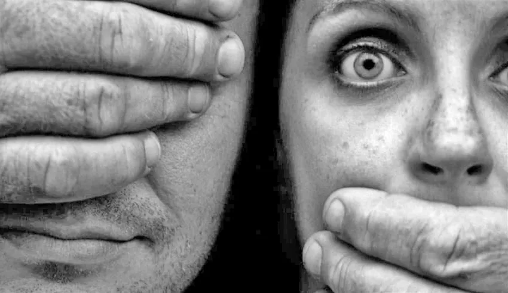
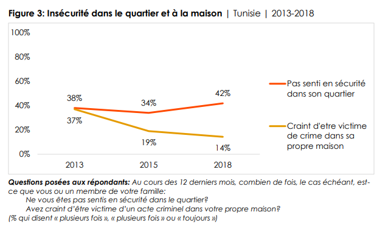

MY citySecure
Accueil
connexion

la criminalité a augmenté en Tunisie au cours de ces trois dernières années de 63,78 %
Un Tunisien sur deux a peur de marcher seul pendant la nuit, contre près d’un sur cinq pendant la journée.
Sécurité personnelle et expérience avec la violence
En ce qui concerne la sécurité personnelle, quatre Tunisiens sur 10 (42%) déclarent qu’ils se
sont sentis en danger dans leur quartier « plusieurs fois » ou « toujours » au cours de l’année
précédente, soit une légère augmentation par rapport à 2013 (38%). Par ailleurs, seulement
un répondant sur sept (14%) disent craindre la criminalité chez lui au moins « plusieurs fois »,
ce qui représente une amélioration de 23 points de pourcentage par rapport à 2013 (37%)

 |
Le moment est venu de trouver une solution pour tout type de risque.
cette platform vous aide à bien vous protéger |